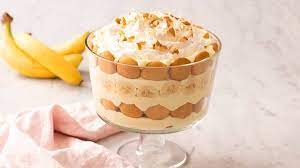
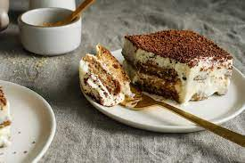

-

Also known as molten chocolate cake, chocolate lava cake consists of a chocolate cake with a liquid center that slowly spills out when cut into. It can be enjoyed by itself or with fresh fruit. It's Anh's favorite dessert.
-

Banana pudding consists of layers of sweet vanilla-flavored custard, vanilla wafers and/or ladyfingers and sliced fresh bananas placed in a dish and typically topped with whipped cream or meringue. It's Mikayla's favorite dessert.
-

Crème brûlée is a rich custard topped with caramelized sugar. The caramelized sugar tends to warm the top while leaving the center cool. It can be enjoyed with fresh fruit such as blueberries and strawberries. It's JAM's favorite dessert.
-

Tiramisu is an Italian dessert made of ladyfingers dipped in coffee, layered with a whipped mixture of eggs, sugar, and mascarpone cheese, and flavoured with cocoa. It's Jessie's favorite dessert.
-

Flan is a custard dessert with a layer of caramel sauce. It's traditionally eaten by itself, but other variations include being served with black coffee poured on top or mixed with other flavors such as pandan juice or coconut milk. It's Anh's favorite dessert again.